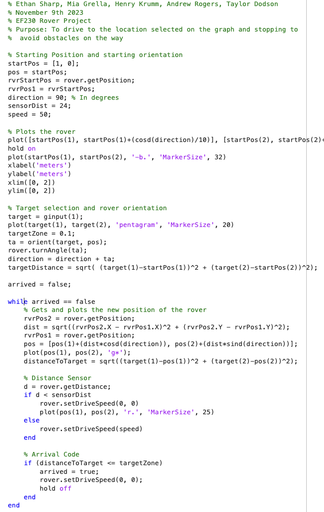

Pages
Campus Involvement
Social Links
Ethan Sharp
BS-BME

Ethan Sharp is a junior at the University of Tennessee, Knoxville. He is currently getting his bachelor's of science in biomedical engineering with an applied music minor. He is on course to graduate in may of 2027. After undergraduate, he plans on attending grad school and getting a master's degree also in biomedical engineering. He currently wishes to pursue either a diagnostics or medical device design track
Projects
Rube Goldberg Project
In November of 2022 in my EF 151 class at Pellissippi State Community College, me and my lab partners built a rube goldberg machine that's purpose was to squeeze the entirety of a tube of toothpaste onto a glass plate. Our machine started with a water bottle that poured into a bucket. When the bucket became heavy enough, it pushed down a board with a car on the other end. The board would then incline which caused the car to roll down. The car had a needle attached to it and it rolled into a balloon with another board balanced on it. When the balloon popped, the board fell and caused a dumbell to roll down onto a path. The right weight on the dumbell ran over the toothpaste which squeeze its contents onto the plate.
Davinci Hammer Project
In April of 2023 in my EF 152 class at Pellissippi State Community College, me and a group of my peers built a davinci hammer powered by water. I built the entirety of the machine except for the water wheel. The image on the right shows my contribution to the project. The video shows someone manually rotating the wheel because the class did not have the water pressure needed to test the machines, but in a real world application, it would be powered by a strong water stream.

Matlab Sphero Rover Project
In November of 2023 in my EF 230 class at the University of Tennessee Knoxville, I participated alongside my lab partners to create the code in matlab to operate a sphero rover to excecute a specific function. Our project had the user select on a map where they wished the rover to go, then the rover woudl orient itself to face the point and drive to the destination. Along the way, the rover stopped for any obstacles in front of it and waited for them to pass before continuing. Thoughout the drive, the rover graphed its position to show the user how far along it was to reaching its destination. Below is the master code used to control the rover as well as the orient funciton used in the master code to orient the rover in the direction of the destination.


Academic Papers
I wrote this paper as an assignment for BME205 Anatomy and Physiology for Biomedical Engineers. The assignment was to design a device to diagnose or treat a disease of the musculoskeletal system. I chose Osteogenesis Imperfecta and my innovation was to include bioactive glass.
I wrote this paper as an assignment for BME205 Anatomy and Physiology for Biomedical Engineers. The assignment was to design a device to diagnose or treat a disease of the cardiovascular system. I chose Marfan syndrom and designed an internal aortic implant to detect aortic root dissection before it occurs.
I wrote this paper as an assignment for BME205 Anatomy and Physiology for Biomedical Engineers. The assignment was to design a device for organ replacement or bridge to transplant. I could choose any organ, including a blood substitute. I Chose ECMO which is commonly used as a bridge to transplant for heart and lung transplant surgery.
I wrote this paper as an assignment for BME205 Anatomy and Physiology for Biomedical Engineers. The assignment was to design a device to diagnose or treat a disease of the nervous system. I chose Alzheimer's disease and designed a patch device to detect early indicators of Alzheimer's onset through specific biomarkers
I and a group of my peers wrote this paper as an assignment for BME474. The assignment was to write a proposal to assess the safety and efficacy of a new biomedical device. We had the flexibility to choose to study an established biomaterial for a new application, a modification to an existing biomaterial, or a fully new biomaterial.